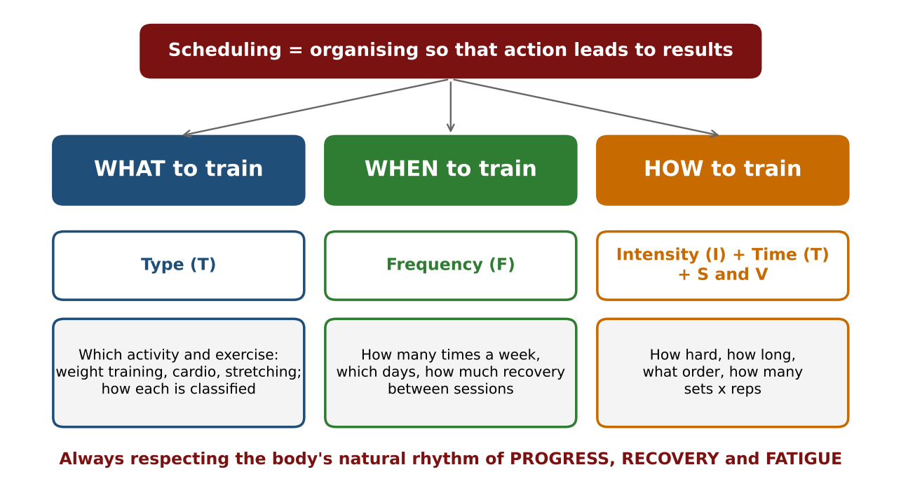
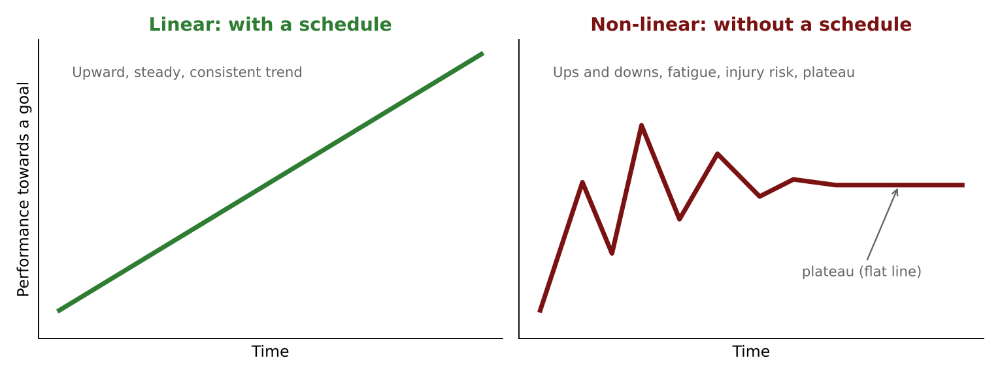
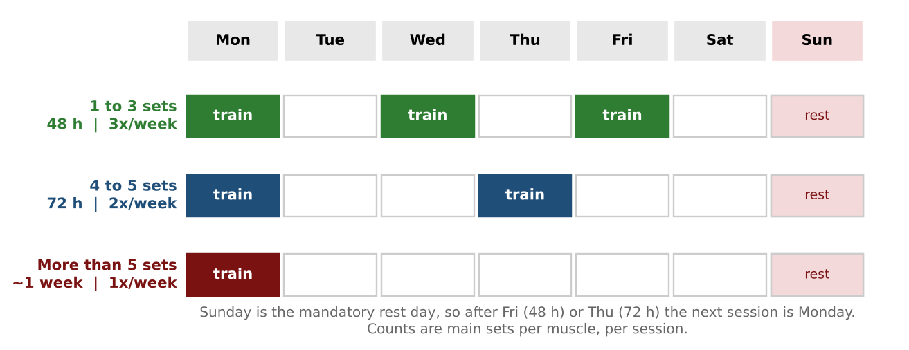
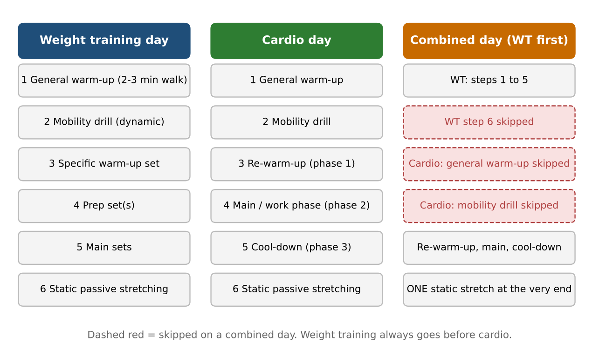
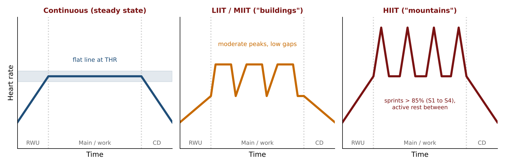
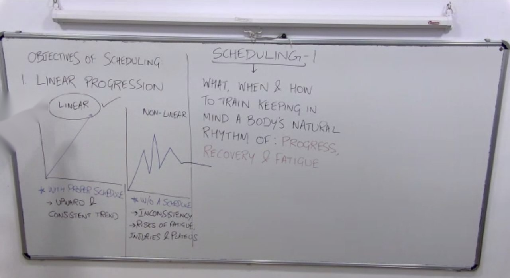
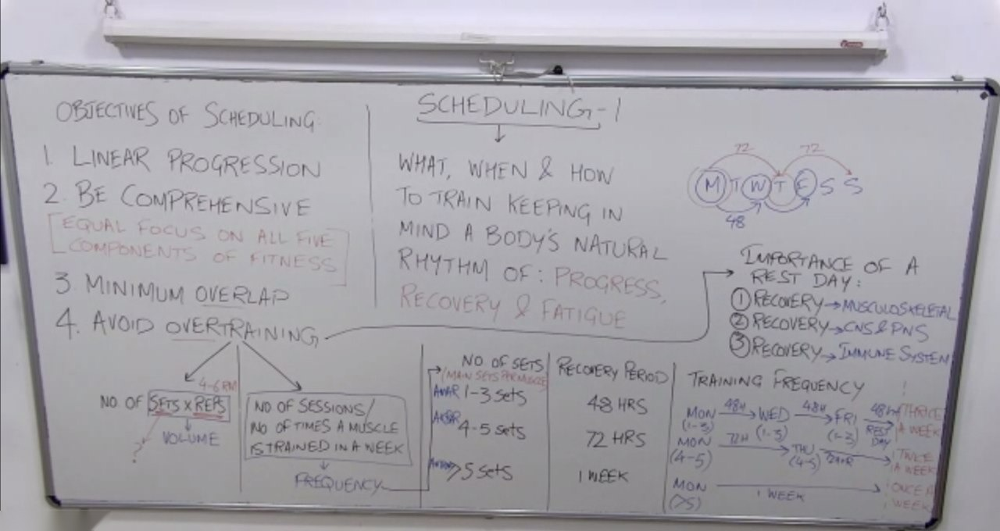
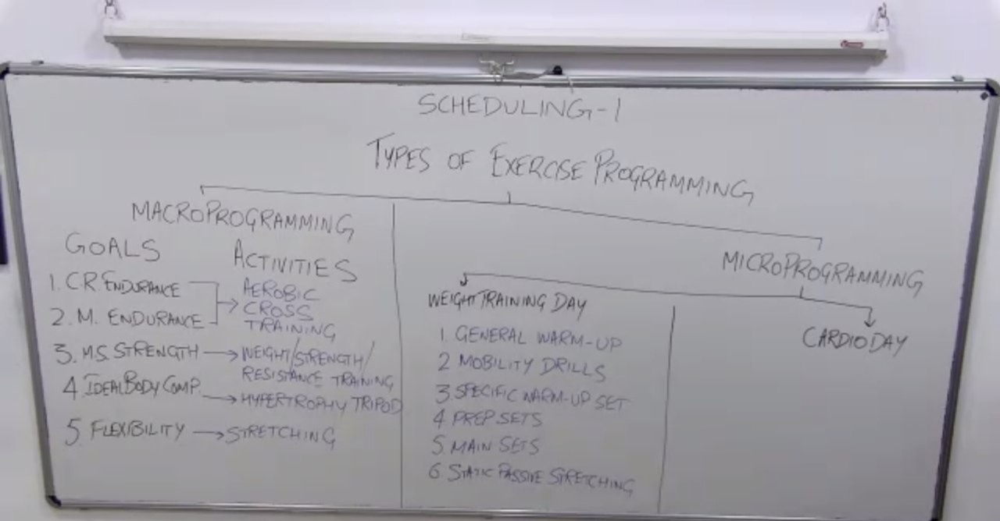
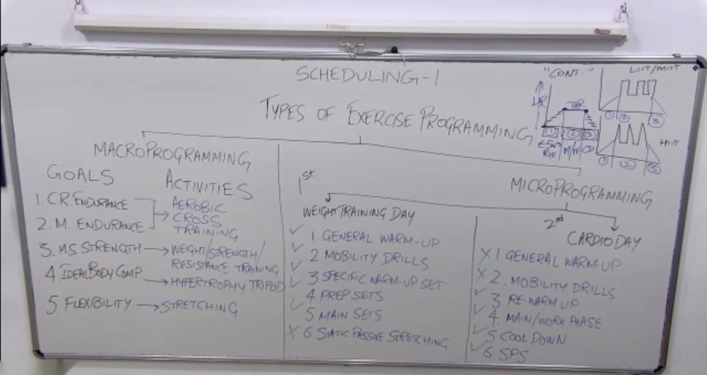
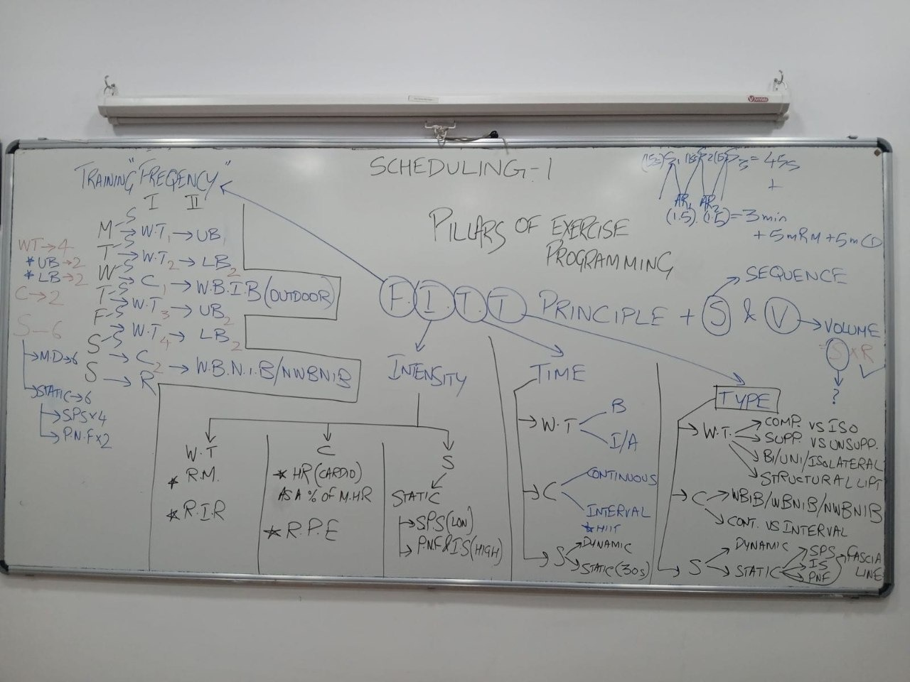

Course: Personal Training Certification. Topic: Scheduling, part 1 of 2.
Sources: lecture recording, course slides ("Scheduling"), board photos from the lecture, and E-book Chapter XVI (Exercise Scheduling).
Big idea: Designing a workout split is like cooking a dish. Today you collect the ingredients. Tomorrow (Scheduling 2) you cook: you assemble the split and find the ideal number of sets.
1. What is scheduling?
- "Scheduling" and "programming" mean the same thing in this course.
- There is no official definition. The working statement built in class is:
Scheduling is organising things so that the action leads to results. It is about WHAT, WHEN and HOW to train, keeping in mind the body's natural rhythm of PROGRESS, RECOVERY and FATIGUE.
- It is not only about what you train, how you train and when you train. It also covers the things that make those whats, hows and whens successful.
- Every client progresses, recovers and fatigues differently, so a schedule must be personalised.
- Why a logic is needed: a student's study timetable (knowledge lasts beyond the exam) and a doctor's prescription (taking every medicine at once may not work, or may be harmful).
WHAT, WHEN and HOW at a glance


| Question | Answered by | Covered in section |
|---|---|---|
| WHAT to train | Type (T): which activity and which exercise, and how each is classified. Macro programming (goals and activities) also answers this | 3, 5.4 |
| WHEN to train | Frequency (F): sessions per week, which days, recovery between sessions, rest day | 2.3, 2.4, 5.1 |
| HOW to train | Intensity (I) and Time (T), plus the finishing touches S (sequence) and V (volume) | 2.3, 5.2, 5.3, 5.6 |
Study aid: WHAT, WHEN and HOW were written on the board at the start and the four FITT pillars were taught later, but the lecture did not draw an explicit one-to-one line between them. The mapping above is the natural fit and is a way to remember them.
2. Objectives of scheduling
Always understand the why before the what and the how.
| # | Objective | Meaning |
|---|---|---|
| 1 | Linear progression | A steady, uniform, consistent, upward trend. |
| 2 | Be comprehensive | Equal focus on all five components of fitness. |
| 3 | Minimum overlap | Do not train the same muscle again with no recovery in between. |
| 4 | Avoid overtraining | Do not do more than the muscle needs: through volume or frequency. |
2.1 Linear progression


- With a proper schedule: upward, consistent trend (the schedule respects how the person progresses, recovers and fatigues).
- Without a schedule: zigzag. It is driven by the calendar and by other people: January motivation, a break-up in February, a festival, a friend who "feels like shoulders today" when you trained shoulders yesterday.
- Risks of the non-linear pattern: inconsistency, fatigue, injury and a plateau (progress stalls, a flat line).
2.2 Be comprehensive
- All five components of fitness must be in the schedule: cardiorespiratory endurance, muscular endurance, musculoskeletal strength, ideal body composition, flexibility.
- The components depend on each other. Skip stretching, and flexibility falls, then range of motion falls, then hypertrophy falls.
- "Comprehensive" here is the same idea as comprehensive muscular endurance in the cardio lecture: the complete 360 degree picture, not task-specific.
- Scheduling is not only the one hour in the gym. The other 23 hours matter. The hypertrophy tripod is progressive overload, nutrition, and rest and recovery.
2.3 Minimum overlap versus avoid overtraining
| Overlap | Overtraining | |
|---|---|---|
| Meaning | The same muscle is trained again with no recovery period in between (for example shoulders Monday and again Tuesday) | Doing more than the muscle needs |
| Can it happen alone? | Yes. If you never train that muscle again that week it is not overtraining, but the two sessions still overlapped | Two routes: volume and frequency |
Volume = sets x reps.
- Ready-made programmes write it as "5 x 5" (five sets of five reps).
- Lecture rule: use stimulating reps, 4 to 6 RM (high motor unit recruitment, high tension, type II fibres working) for intermediate and advanced trainees.
- Beginners: 15 to 20 RM range, recommended reps about 10 to 15 (they are in the learning phase).
- The ideal number of sets is answered in Scheduling 2.
- See section 7 for a difference between the lecture and the slides on rep ranges.
Frequency = number of times a muscle is trained in a week. The research-based table below counts main sets per muscle, per session. It does not count sets per exercise, warm-up sets or prep sets. (For example 2 main sets of lat pulldown plus 1 main set of a supported row = 3 main sets for the latissimus dorsi.)
| Main sets per muscle (one session) | Recovery needed | Weekly frequency |
|---|---|---|
| 1 to 3 | 48 hours | 3 times (for example Mon, Wed, Fri) |
| 4 to 5 | 72 hours | 2 times (for example Mon, Thu) |
| More than 5 | About 1 week | Once |


- 48 hours = the rest of day 1 + one full day + the rest of day 3 (for example Monday 2 pm to Wednesday 2 pm).
- Sunday is kept as the mandatory rest day, so the next session after Friday (48 h) or Thursday (72 h) falls on Monday.
- The bro split (one body part per day) fits the "more than 5 sets, once a week" row.
- The numbers assume natural trainees (no artificial substances). The studies behind them were conducted on natural training.
2.4 Importance of a rest day
Not giving a rest day is a way of overtraining. Three recoveries are needed:
| Recovery | Why |
|---|---|
| Musculoskeletal | Soft tissues (tendons, ligaments, muscles, fascia) and bones. The same joints work on many days (the shoulder joint is used on back, chest and shoulder days). You cannot leave your femur and humerus at home to play cricket. |
| CNS and PNS | CNS = the factory that produces the contraction signals. PNS = the truck drivers that deliver them. They work 24/7 and need a complete day off. (The slides list only CNS.) |
| Immune system | Immunity is a shield and stress weakens it. Stress may be non-controllable (financial, relationship) or controllable. A full rest day helps keep cortisol in check. |
3. Macro and micro programming
- Macro = the big picture (a forest). Micro = the zoomed-in detail (a tree).
- Examples: this certification (macro = three modules with three unit tests, micro = one lecture); a wedding (macro = four functions in a week, micro = the timings of one day).
- Macro comes first. It is the blueprint from which the daily structure is built. If a goal is missing at macro level, it is missing at micro level.
3.1 Macro programming: the whole fitness journey
| Goal (component of fitness) | Main activity |
|---|---|
| Cardiorespiratory endurance and muscular endurance | Aerobic cross-training (a mix of aerobic activities builds comprehensive muscular endurance, not only task-specific endurance) |
| Musculoskeletal strength | Weight (strength or resistance) training |
| Ideal body composition | Hypertrophy tripod (progressive overload, nutrition, rest and recovery). Ideal male body fat is under 15% |
| Flexibility | Stretching |
Under "activity" write the type of activity, not an exercise or a number of sets.
3.2 Micro programming: one session


Weight training day
| Step | What | Why |
|---|---|---|
| 1 | General warm-up: 2 to 3 minute slow walk | Wakes up body and CNS |
| 2 | Mobility drill: dynamic stretching, done before | Stimulates the CNS, improves blood flow, removes joint stiffness |
| 3 | Specific warm-up set: same exercise as the main set, body weight or empty bar | Checks the exact movement pattern is pain-free before loading |
| 4 | Prep set(s): gradually heavier (for example 40%, 60%, 80% of 1 RM) | Prepares soft and hard tissue. There is no rule of three; it varies |
| 5 | Main sets: the heavy, stimulating sets | The sets counted in the frequency table |
| 6 | Static passive stretching (SPS), at the end | Static stretching (stretch reflex, then autogenic inhibition) relaxes the muscle, so doing it first would relax it before it must produce force |
Set types by level (from the intensity lecture)
| Level | Sets used |
|---|---|
| Beginner | Learning sets only (no specific warm-up, prep or main sets). The 3 minute rest interval applies only to main sets, so it does not apply. |
| Intermediate | Specific warm-up set (3) + main sets (5). No prep set. |
| Advanced | All three: 3, 4 and 5. |
- "Specific" means specific to the exercise, not just the muscle (warming up for squats with leg extensions is not specific).
- The specific warm-up is for the main compound lifts. You do not need one for a biceps curl after pulling exercises, because those muscles have already worked.
- Someone who trains every day is not necessarily doing something good: they may be overtraining. Come with a clean slate.
Cardio day
| Step | What |
|---|---|
| 1 | General warm-up |
| 2 | Mobility drill |
| 3 | Re-warm-up (phase 1): raise the heart rate step by step to the target heart rate (THR) zone, about 5 minutes. The prefix "re" is used because the general warm-up already happened |
| 4 | Main / work phase (phase 2): a flat line for continuous, "buildings" for LIIT/MIIT, "mountains" for HIIT |
| 5 | Cool-down (phase 3): step by step, not suddenly, to avoid dizziness or syncope (blackout) |
| 6 | Static passive stretching (the muscles have still worked, so they still need relaxing) |


Combined day (weight training plus cardio)
- Weight training first, then cardio. Cardio first fatigues the muscles and weakens the main sets.
- Weight training part: steps 1 to 5. Skip step 6, so you do not relax the muscles before cardio.
- Cardio part: skip the general warm-up and mobility drill (already warm, CNS already stimulated). Keep the re-warm-up, main phase and cool-down.
- One static stretching session at the very end, not in the middle.
- 10 minutes of treadmill cardio before weights is not recommended (it fatigues the muscles).
Exam hint: expect an MCQ asking for the most logical micro programme, with the steps jumbled across the options (for example static stretching first, mobility drill last).
4. Fundamentals of exercise programming
All seven are equally important. The list is not a ranking. (The slide calls the fourth one "Progression".)
| # | Fundamental | Key idea |
|---|---|---|
| 1 | Specificity | A specific goal needs a specific task. Do not do things that deviate from the goal (for example choose a supported lower body exercise if the client must avoid back stress). |
| 2 | Adaptation | The body adapts to a new movement only if you keep doing it (a first push-up challenge: 2 or 3 reps, then about 15 after a month). |
| 3 | Overload | If the weight never increases, muscle tension does not increase. The mechanoreceptors tell the CNS nothing new, so the current myofibrils and sarcomeres are "enough" and there is no hypertrophy. |
| 4 | Progress(ion) | The result of the points above working together in one programme. |
| 5 | Intensity | How hard. Determined differently for weight training, cardio and stretching (section 5.2). |
| 6 | Duration | Most relevant to cardio (a workload factor), but it varies in weight training by level (section 5.3). |
| 7 | Reversibility | Any gain (fat loss, hypertrophy, anything) is lost if you stop training or take diet and recovery for granted. Growth is slower than the downfall. |
Reversibility details
- In the study described, 100 people were trained for 3 months with training, nutrition and recovery closely monitored. After stopping training (nutrition and recovery unchanged), the muscle gained was lost much faster than it had been built. The lecture used hypothetical numbers (for example 5 kg gained, about half lost in two weeks, nearly all lost in a month). Do not quote them as research data.
- The rate is not the same for everyone. It is slower for someone with prior training experience (neural pathways and proprioception already in place) and is affected by nutrition, especially protein.
5. The four pillars: FITT principle
The lecture calls it the FIT principle with four pillars. The slides write it FITT: Frequency, Intensity, Time, Type. Apply each pillar to three activities: weight training (WT), cardio and stretching. Then add S and V as finishing touches (section 5.6).
5.1 F: Frequency (how to read a client's diary)
Read it in layers. Example week: Mon WT upper body, Tue WT lower body, Wed cardio, Thu WT upper body, Fri WT lower body, Sat cardio, Sun rest.
| Layer | Question | Answer for the example |
|---|---|---|
| 1 | How many sessions of each activity? | Weight training 4, cardio 2 |
| 2 | Per body region? | Upper body 2, lower body 2 |
| 3 | Per muscle? | Latissimus dorsi 2 (Mon and Thu), not 4 |
| 4 | Per part of the muscle? | Horizontal fibres (shoulder extension exercises) versus diagonal fibres (shoulder adduction exercises) |
- Count synergist work too. Triceps work in bench presses (elbow extension), overhead presses (shoulder vertical abduction) and chest work (shoulder horizontal adduction), not only in triceps exercises. Missing this causes overtraining.
- Cardio: classify by joint stress and setting. An outdoor run is WBIB. Indoors the client can choose WBIB (treadmill), WBNIB (elliptical, no foot strike) or NWBNIB (upright bike, rowing machine, swimming).
- Stretching: the example uses 6 sessions a week. Mobility drill 6 and static 6 (for example 4 SPS and 2 PNF). PNF at most twice a week.
- Stretching frequency does not follow the 48 hour muscle rule. Each stretching type has its own guideline in the stretching lecture.
5.2 I: Intensity
| Activity | How intensity is determined |
|---|---|
| Weight training | RM method: the lower the RM, the higher the intensity. RIR (reps in reserve): the fewer reps left in reserve, the higher the intensity (0 or 1 in reserve = close to failure; 4 or 5 in reserve = low intensity). |
| Cardio | HR during cardio as a percentage of MHR (the target heart rate, calculated with the Karvonen formula). When HR cannot be used (patients, pregnant women, no devices): RPE (Borg 0 to 10 scale; 9 = really, really hard, 10 = maximum) and the talk test. RPE can also be used in weight training. |
| Stretching | SPS = lower intensity. PNF and isometric stretch = high intensity (an isometric contraction causes micro trauma), so no more than twice a week. |
5.3 T: Time (duration)
| Activity | Time |
|---|---|
| Weight training | Beginners: no 3 minute rest (no main sets) but more reps (10 to 15), so the session can still be long. Intermediate and advanced: 3 minute rests on main sets, but only 4 to 6 reps per set. Time goes up and down. |
| Cardio | Continuous: aerobic, more than 3 minutes, can last hours, flat THR. Interval (for example HIIT): short, intense, anaerobic sprints. |
| Stretching | Static is time-based (30 seconds per hold in the slides; the lecture said 25 to 30 seconds). Dynamic (mobility drill) is repetition-based. |
Worked example (HIIT session): 5 min re-warm-up + 3 sprints x 15 s (45 s) + 2 active rests x 1.5 min (3 min) + 5 min cool-down = 13 min 45 s.
5.4 T: Type
| Activity | Classification |
|---|---|
| Weight training | Compound vs isolation (multiple joints vs one joint); supported vs unsupported (hip and/or back supported by bench or seat vs not); bilateral (both sides, same object), isolateral (both sides, different objects), unilateral (one side at a time); structural |
| Cardio | WBIB / WBNIB / NWBNIB (joint stress); continuous vs interval (LIIT, MIIT, HIIT, Fartlek) |
| Stretching | Dynamic vs static; static = SPS, isometric stretch, PNF, fascial line stretch |
Structural lift criteria: bilateral + compound + unsupported + axial (action) loading + both knee and hip involved.
5.5 FITT guidelines from the course slides
| Frequency | Intensity | Time | Type | |
|---|---|---|---|---|
| Stretching | 6 times a week | Mobility drill: low. Static: stretch to the point of mild discomfort, not severe pain | Mobility: continuously for 5 to 10 minutes. Static: 30 second hold | Mobility drills; static passive stretches |
| Cardio | 3 to 5 times a week | Low, moderate, high, very high | 20 to 60 minutes | WBIB, WBNIB, NWBNIB. Programs: continuous, LIIT/MIIT, HIIT, Fartlek |
| Weight training | 3 to 4 times a week | Low, moderate, high, very high (depends on training experience) | 20 to 90 minutes | Structural, unsupported compound, supported compound, isolation. Sub-type: bilateral, isolateral, unilateral |
The slides add that cardio depends on age, training experience, health status, lifestyle and goal, and weight training on goal, training experience, lifestyle and health status.
5.6 Finishing touches: S and V
- S = Sequence: unsupported compound, then supported compound, then isolation, then unilateral.
- V = Volume: sets x reps (reps = 4 to 6 RM stimulating reps; sets are decided in Scheduling 2).
6. Key terms
| Term | Meaning |
|---|---|
| Scheduling / programming | Organising training so that action leads to results (WHAT, WHEN and HOW) |
| Linear progression | Steady, consistent, upward progress |
| Plateau | Progress stalls (flat line) |
| Overlap | Training the same muscle again without recovery |
| Overtraining | Doing more than the muscle needs (volume or frequency) |
| Volume | Sets x reps |
| Frequency | Times a muscle (or activity) is trained per week |
| Stimulating reps | 4 to 6 RM (lecture) |
| Main set | A heavy working set (counted); warm-up and prep sets are not |
| Specific warm-up set | Light set of the same exercise as the main set |
| Prep set | Progressively heavier set preparing the tissues |
| Learning set | Beginner set (replaces warm-up, prep and main sets) |
| Macro / micro | Whole journey / a single session |
| Aerobic cross-training | Mix of aerobic activities for comprehensive muscular endurance |
| Re-warm-up | Cardio phase 1: bring heart rate to the THR zone |
| Syncope | Blackout caused by stopping cardio suddenly |
| RM / RIR | Repetition maximum / reps in reserve |
| RPE | Rating of perceived exertion (0 to 10) |
| PNF | Proprioceptive neuromuscular facilitation (high-intensity stretching) |
| SPS | Static passive stretching |
| WBIB / WBNIB / NWBNIB | Weight-bearing impact-based / weight-bearing non-impact-based / non-weight-bearing non-impact-based |
| FITT | Frequency, Intensity, Time, Type |
7. Where the sources differ
| Topic | Lecture | Slides / E-book | What to do |
|---|---|---|---|
| Rep range by level | Stimulating reps 4 to 6 RM for intermediate and advanced (beginner 15 to 20 RM, reps 10 to 15) | Slides: intermediate 10 to 15 RM, advanced 6 to 8 RM, beginner 15 to 20 RM | The scheduling slides were described as a work in progress and the lecture as the updated version. Use 4 to 6 RM, and confirm with your course team |
| Static stretch hold | About 25 to 30 s (15 s was mentioned once) | Slides: 30 s. E-book: 10 s | Use 30 s |
| Mobility drill time | 10 to 12 repetitions per drill | Slides: continuously for 5 to 10 minutes | Both can be true: reps per drill, total time for the routine |
| Name of principle | "FIT principle", four pillars | Slides: FITT | Same four pillars |
| Recovery of nervous system | CNS and PNS | Slides: CNS only | Use CNS and PNS |
| Wording repaired from the recording | PNS was not spelled out in the recording (taken as peripheral nervous system); "action loading" is written as axial (action) loading; "caron formula" is written as Karvonen | Standard terms | Check against your course material |
The E-book agrees on the macro plan: cardio at least 3 times a week, weight training 3 to 4 days a week, stretching at the end of every workout, and one complete rest day a week for CNS recovery.
8. Quick revision questions
- Which three things does scheduling answer, and which three rhythms must it respect?
- Name the four objectives of scheduling.
- What is the difference between overlap and overtraining?
- How many main sets per muscle need 48 hours, 72 hours and one week of recovery? Give the weekly frequency for each.
- What does "main sets per muscle" mean?
- Why must all five components of fitness be included?
- Name the three types of recovery that a rest day provides.
- Which activity covers both cardiorespiratory and muscular endurance in the macro programme?
- List the six steps of a weight training day and of a cardio day.
- Why is static stretching done at the end?
- What is "specific" about a specific warm-up set?
- Which set types do beginners, intermediates and advanced trainees use?
- On a combined day, which goes first? Which steps are skipped?
- List the seven fundamentals of exercise programming.
- What does reversibility say about the speed of gains versus losses?
- What does FITT stand for, and which letter answers WHAT, WHEN and HOW?
- How do you measure intensity in weight training, cardio and stretching?
- What is the maximum PNF frequency, and why?
- State the criteria for a structural lift.
- Calculate the total time of a HIIT session with a 5 min re-warm-up, 3 sprints of 15 s, 2 active rests of 1.5 min and a 5 min cool-down.
Answers
- WHAT, WHEN and HOW to train. It must respect the body's natural rhythm of progress, recovery and fatigue.
- Linear progression, be comprehensive, minimum overlap, avoid overtraining.
- Overlap = the same muscle trained again with no recovery between sessions. Overtraining = doing more than the muscle needs (too much volume or frequency).
- 1 to 3 sets: 48 h, 3 times a week. 4 to 5 sets: 72 h, 2 times a week. More than 5 sets: about 1 week, once a week.
- The total heavy sets for the whole muscle in one session. Warm-up and prep sets are not counted and it is not per exercise.
- The components depend on each other. Ignoring one (for example flexibility) hurts the others (range of motion, then hypertrophy).
- Musculoskeletal, CNS and PNS, and immune system recovery.
- Aerobic cross-training.
- Weight training: general warm-up, mobility drill, specific warm-up set, prep sets, main sets, SPS. Cardio: general warm-up, mobility drill, re-warm-up, main/work phase, cool-down, SPS.
- Static stretching relaxes the muscle (stretch reflex then autogenic inhibition). Doing it first would reduce its ability to contract and produce force in the main sets.
- It is the same exercise as the main set (not just the same muscle), done with a light load to check the movement pattern is pain-free.
- Beginner: learning sets only. Intermediate: specific warm-up set and main sets. Advanced: specific warm-up, prep and main sets.
- Weight training first. Skip step 6 (SPS) after weights, skip the general warm-up and mobility drill before cardio, and do one static stretch at the very end.
- Specificity, adaptation, overload, progression, intensity, duration, reversibility.
- Gains are built slowly but lost faster: growth is slower than the downfall.
- Frequency, Intensity, Time, Type. (As a study aid, not drawn in the lecture: WHAT = Type, WHEN = Frequency, HOW = Intensity and Time, plus S and V.)
- Weight training: RM and RIR. Cardio: HR as a percentage of MHR (or RPE and talk test). Stretching: SPS is lower, PNF and isometric stretch are high.
- Twice a week, because the isometric contraction causes micro trauma.
- Bilateral, compound, unsupported, axial (action) loading, and both knee and hip involved.
- 5 + 0.75 + 3 + 5 = 13 min 45 s.
9. Board photos from the lecture


Objectives of scheduling, with the WHAT, WHEN and HOW statement and the linear versus non-linear graphs.


Overtraining (volume and frequency), the sets and recovery table, the weekly frequency example and the importance of a rest day.


Macro programming (goals and activities), with the weight training day being built.


Complete macro and micro programming for a weight training day and a cardio day, with the cardio graphs (continuous, LIIT/MIIT, HIIT).


Pillars of exercise programming: FITT plus S and V, the frequency chart, intensity, time and type for weight training, cardio and stretching.